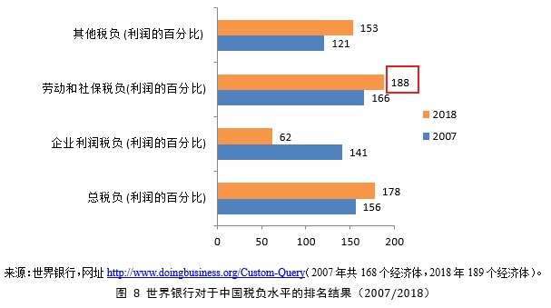
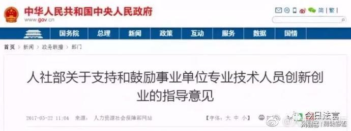

等看明年中小企业倒闭潮......@屈宏斌:世界银行报告确认我国企业总税费负担在全球189个被调查的国家和地区中又最轻到最重的排序中名列178位。其中社保负担排188位!，全球第二! 明年社保归税局征收，这是要把全球第二做实的节奏!如果五险一金和增值税率不降，明年企业税费负担剧增，加之贸易战，实体经济可能会陷入前所未有的困境! 
“大众创业 万众创新”确实彻底黄了。2017年下旬，北京驱赶DD人口的同时，公司注册方面的政策也被收紧， 当时我接到工商部门电话不下十个，一再核实公司地址什么的，接着就听说各个创业孵化器一个接一个地关闭。这直接提高了创业公司的成本，因为公司必须有独立的商业办公地址，而且时不时工商还要来核查下，是否真人在此地办公。即使买注册地址也得考虑加上后续的核查成本。最近新闻里出现了鼓励机关人员创业，鼓励退休人员创业。 #创业#这个词，有可能会被搞得跟“下岗”同义了。
我在#中国大学MOOC# 学《化妆品赏析与应用》，网页链接 @李利教授 授课这次课2018年9月3日开课，每周一课，15节课，2019年1月15日结束。估计要在线参加讨论，考试什么的，因为最后有四川大学的结业证书。最重要的是：免费！！！中国大学慕课App很不错，真正把大学课堂搬到了网上。得到上有些收费课程，慕课App上都免费，而且还有作业和考卷。
鼓励的是“高校和科研单位”这些事业单位里的人员，保留职位需要原单位同意，很可能跟医生的多点执业政策一样，雷声大，雨点小。@人大经济论坛:【国务院：鼓励事业单位人员在职创办企业，不用辞职！】为贯彻落实党中央、国务院关于加快实施创新驱动发展战略、深化人才发展体制机制改革、大力推进大众创业万众创新和做好新形势下就业创业工作的总体部署和要求，发挥事业单位在科技创新和大众创业万众创新中的示范引导作用，激发高校、科研院所等事业单位（简称“事业单位”）专业技术人员科技创新活力和干事创业热情，促进人才在事业单位和企业间合理流动，营造有利于创新创业的政策和制度环境，按照简政放权、放管结合、优化服务的要求，现就支持和鼓励事业单位专业技术人员创新创业提出以下指导意见网页链接
私立医院可以给医生护士开高薪，人工成本更高，还能取得这样的利润率，只是再次说明规律：公办企业效率低。@消化科倔老头:说白了，我见过一个管理效率高的私立医院，利润率可达50%左右；再差一点的私立医院，利润率竟也达30%；而一些公立医院，能有15%就不错了。这也是一些公立医院看GDP不错，每年几十亿，可年终账户上没多少余钱。